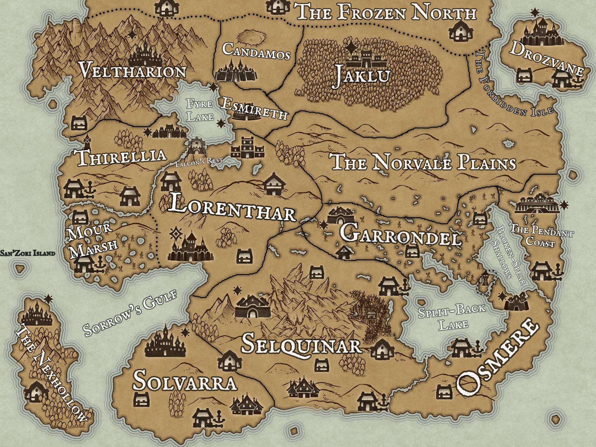

Your character sheet isn't set up yet.
Two quick things to have ready first:
- A GitHub account — and Brady adds you as a collaborator on the repo (accept the email invite).
- A folder called Iosandros with your character sheet + any campaign notes (history documents, any notes from your session zero) in it. Claude Code focuses on this folder and asks before touching anything outside it.
Then it's three steps:
Step 1 — Set up. Install Claude Code
(claude.com/claude-code),
run it in your Iosandros folder, and paste the
Step 1 prompt from the README.
Claude Code connects GitHub, clones this repo into the folder,
and confirms you can push.
Step 2 — Build. With Claude Code running in the repo, just tell it "do Step 2" — it reads the instructions from the repo and builds this Character page and your Play Tracker from your sheet. (The exact prompt's in the README if you ever want it.) When it pushes, tap ↻ Refresh up top.
Step 3 — Refine (ongoing). Keep chatting with Claude to restyle it, change the layout, or add features and new pages. No fixed prompt — just ask.
Your play tracker isn't set up yet.
It's built by the same step as your character sheet — head to the Character tab and follow the walkthrough there. Once Claude runs, this page fills in too: current HP, resources, conditions, notes — whatever you track.
Territories

Drag the pin to mark where the party is.